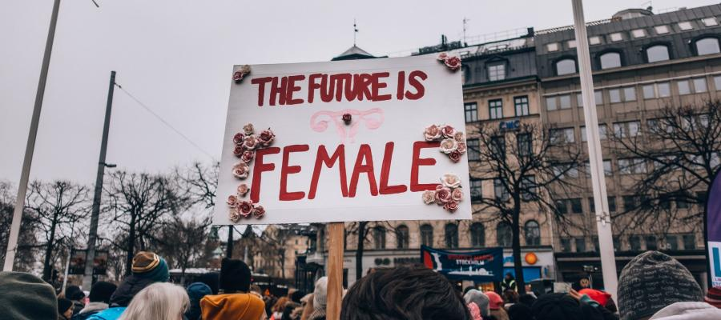
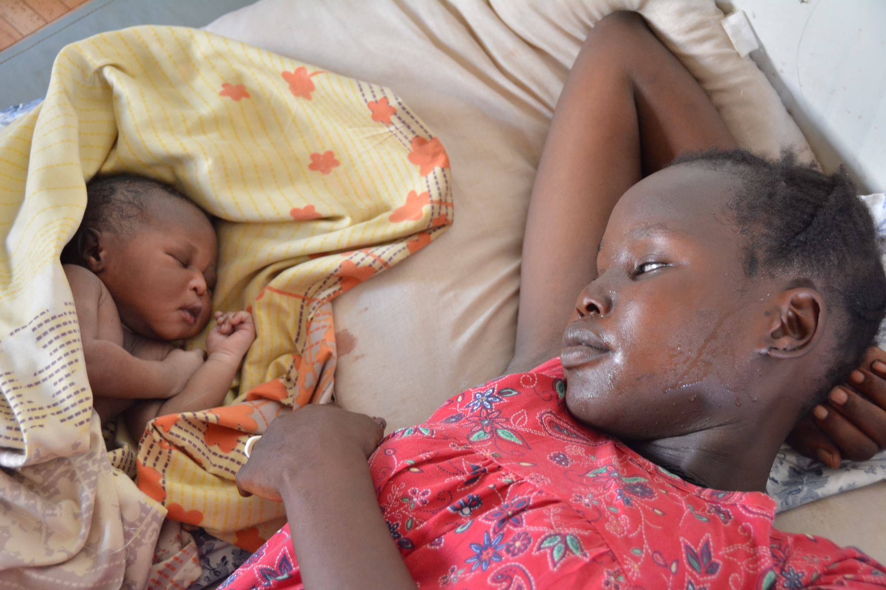
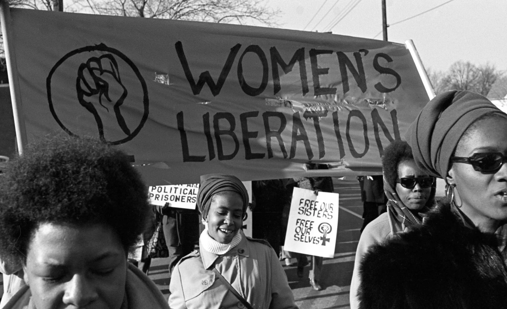
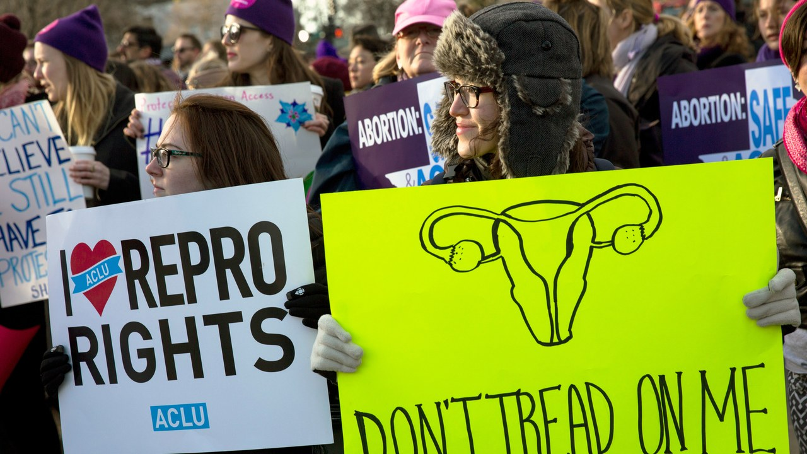

Feminism for All Race
The fight for feminism is a long battle that women have been fighting for centuries. Many say that we are now in a new age where women now has equal rights and opportunities as their counterparts- men. But do they really? Do all women of different races receive equal rights? Do all women have the same privileges as other women but of different descent and status? Let's find out.
About
The day that a woman is born, they are already in a battlefield against an enemy that they do not even exist or they do not even understand the purpose of existence. Women has to fight for their rights in all aspect of life- education, voting, respect and etc- that men do not even have to struggle for.

Indeed, the world has now slowly changing. Women from several parts of the world has learned to stand up for themselves to fight for the life that all women should have, a life of freedom. There are already several laws that allowed women to live equally together with men. However, this law differs in every country. We still have sisters out there who are not free from the chains of sexism and misogyny. Other countries still forbid women to have proper education, to wear what they want, to choose the path they want to become, etc. The struggle still prevails and exists!
Untold Stories
The Black Women's Fight

All women are fighting for the same goal- to finally become ourselves without the fear and restrictions that the fortress of sexist men has built. However, even though all women want the same thing, there are still division between women for this fight. Other women have to struggle more than other women of different races because of racism and priveleges. In the ook "The Combahee River Collective, a group of black lesbian told their stories about their experience in working to fight for equality in gender and race. They described that even though all women of colors are working for the same purpose, tghere are divisions among these feminist group based on their skin color. They said that white women are racist to black women. It's extremely sad that despite experiencing the same prejudices just because we are all born as women, other women still can still perform atrocious acts to their sisters. To add more, black men are said to be sexist to black women. Despite all the people that tries to silence them, many black women still continuously rise to shout for their rights and tell their stories so that many more people of all races and genders will hear their tales and come together to stand for one another.
The Women's Fight for their Body

In Lorde's "Uses of Erotic", she mentions "For not only do we touch our most profoundly creative source, but we do that which is female and self-affirming in the face of a racist, patriarchal, and anti-erotic society." Truly, we must free ourselves from all forms of tyranny if we are to fully escape this patriarchal and sexist culture. Sexual and erotic behavior constitutes one of the most disregarded forms of oppression. In spite of the fact that most males are commended for suppressing their sexual appetites, women are constantly urged to do so because doing so is seen as disrespectful to their bodies. Women don't seem to have complete control over their bodies, in my opinion. We are constantly being advised what to do and what not to do.
Although not all religions teach this, some educate girls that they should submit to their husbands and that they shouldn't engage in sexual activity with men before marriage. My upbringing was deeply religious, and I attended a catholic high school. When we were young girls, we were constantly told to repress our sexual inclinations, and they used biblical teachings to impose this sexist ideology. Even though I remain religious to this day, I do think that many individuals have distorted the meaning of sacred texts in order to use them to their own advantage. These behaviors have always been directed at women.
Is a woman's body truly hers? Throughout centuries, we have been deprived to make our own choice. There are many recordings of women being forced into marriage as young as 12. We are always taught that our sexual pleasure comes second and our future husband comes first. Women are always being shamed if they wear clothing that men deem too revealing. Now, with the recent Roe v Wade, women are stripped of their rights to make their own decision if they want to keep their pregnancy or not. Although I do think that this is a very complex topic, in my own opinion, a woman's body should not be decided by men that doesn't know how it is to be a woman in this society.
Citation
https://www.philosophytalk.org/blog/changing-face-feminism
https://www.facebook.com/unicef/photos/a.10150563250124002/10152106514109002/
https://time.com/5560575/intersectionality-theory/
https://www.lawyerscommittee.org/the-lawyers-committee-and-the-center-for-reproductive-rights-along-with-many-others-are-fighting-for-reproductive-rights/